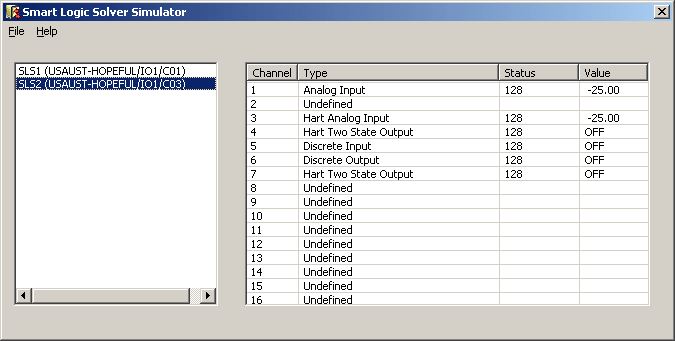
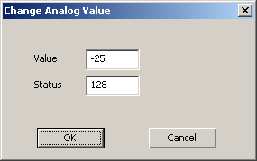

SLS 1508 Logic Solver I/O simulation
Another way to test a module is to run the SLSSimulator to simulate a logic solver's I/O. Start the application by entering slssimulator in the Windows Start menu Run field. The application appears.
You must run SLSSimulator on the workstations that are simulating the controller and logic solver cards whose I/O you are simulating. You must run it from the Windows Run dialog.

The left pane of the application dialog contains the name and path of logic solvers commissioned in the SIS Network. The right pane contains information about the 16 I/O channels of the logic solver selected in the left pane. If the logic solver has not been downloaded, all the channels appear as undefined.
The SLSSimulator must remain open during the simulation. If you close the simulator all simulated values return to their defaults.
When you right click on a channel in the right pane, a dialog appropriate for the selected channel appears. For example, the dialog for an Analog Input channel looks like the following.

The allowable edits depend on the channel type:
|
Channel Type |
Allowed Edits |
|---|---|
|
Analog Input |
Value (-25 to 131.25 percent of scale) and Status |
|
HART Analog Input |
Value (-25 to 131.25 percent of scale) and Status |
|
Discrete Input |
Value (Off or On) and Status |
|
HART Two-state Output |
Status |
|
Discrete Output |
Status |
The status value must be between 0 and 255.
You can run multiple instances of SLSSimulator to simulate I/O values on more than one logic solver at a time.